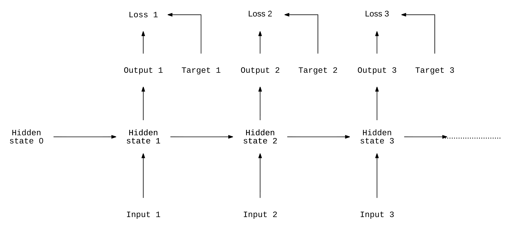

From DNA sequences and patient timelines to speech, text, and sensor data, much of the world’s information arrives as sequences: ordered data where context matters. While architectures like CNNs revolutionized image comprehension, they were not built to handle the fluid, variable-length nature of sequential inputs.
This week in my Deep Learning in Biology overview series, we dive into one of the foundational ideas in modern AI: Recurrent Neural Networks (RNNs) and their powerful extensions, LSTMs and GRUs. Understanding RNNs is essential for grasping the evolution of not just recent sequence models, but also the architectures that ultimately replaced them.

Challenges with sequences
A sequence refers to an ordered structure of information. Small changes in order can completely change meaning. However, sequences introduce several challenges:
Variable lengths: Biological measurements, clinical notes, and sentences all differ in size.
Context dependencies: The meaning of each element depends on what came before (and sometimes after).
High dimensionality: Inputs often contain multivariate or semantic structure.
Noise and missingness: Real-world biological and clinical data often include incorrect information and/or missining data points, which can complicate appropriate interpretation of data.
What we really want is a probabilistic model that can assign a meaningful likelihood to each possible sequence. This is the motivation behind Recurrent Neural Networks (RNNs).
From statistical to neural models
Before deep learning, sequence modeling (including machine translation, also known as ‘MT’) was dominated by statistical methods. Early systems involved Rule-based MT (RMT) and were focused on hand-crafted linguistic rules. The follow-up to this approach was Statistical MT (SMT), and relied heavily on Bayes’ rule - separate models were developed to handle both fidelity (quality of translation) and fluency (quality of language).
With the advent of deep learning, Neural Machine Translation (NMT) replaced this pipeline with end-to-end training, learning representations, alignment, and translation jointly. The same shift happened across NLP, speech, and biological sequence analysis.
Recurrent Neural Networks (RNNs)
A standard neural network expects fixed-size inputs and cannot “remember” earlier computations. RNNs solve this through recurrence:
The same weight matrix is applied at every timestep.
A hidden state carries forward information through the sequence.
The model size stays constant, no matter how long the sequence is.

This symmetry makes RNNs the first neural architecture capable of handling arbitrary-length sequential data (both with respect to input and output). RNNs can thus be used to model temporal dependencies, as well as represent both local and global patterns in the data.
In spite of these advances in terms of handling sequential data, many challenges still exist. It is difficult for RNNs to access distant information across input sequences, creating limitations in long-range dependency modeling. RNNs are also memory-intensive and take a long time to train.
Lastly, as we described in last week’s overview, RNNs are prone to both vanishing and exploding gradients. Vanishing gradients refer to the challenge where gradient signals shrink exponentially as they travel backward through the network. As a result, the RNN will end up focusing only on short-term dependencies, effectively ignoring any long-range context. On the other hand, exploding gradients refer to the “blowing up” of gradient norms, causing unstable updates in the process. These can lead to inappropriate training jumps that prevent the model from settling on the right minimal loss.
Solutions to both of these challenges include careful initialization of model parameters, gradient clipping, gradient normalization, residual and skip connections, and most importantly, gated architectures.
LSTMs: solving long-range dependencies
Long Short-Term Memory (LSTM) networks introduce a clever mechanism to the RNN architecture: gates that control information flow. Each timestep maintains:
a cell state (accounting for long-term memory)
a hidden state (accounting for short-term output)
Furthermore, each timestep includes each of the following three gates:
a forget gate: what to erase
an input gate: what to store
and an output gate: what to reveal

This gating process generates gradients to flow more cleanly across many timesteps, solving the vanishing gradient problem and enabling models to capture long-term structure.
GRUs: simpler, faster alternatives
No, this is not Gru from “Despicable Me”… The Gated Recurrent Unit (GRU) model simplifies LSTMs by combining the input and forget gates into a single update gate. Furthermore, a reset gate is used to control past information. The fewer parameters included in this architecture result in faster training. Furthermore, despite being simpler models, GRUs often perform just as well as if not better than LSTMs, especially on medium-sized datasets.

RNN extensions
Further modifications can be made to the RNN architecture to improve the way that sequential data are represented.
Bidirectional RNNs process sequences forward and backward, allowing the model to consider context from both the past and future. This model architecture is great for tasks where the whole sequence is available (e.g. named entity recognition, text classification) but is not well-suited for real-time tasks.
Stacked RNNs use the layers of recurrence to add a hierarchical modeling aspect to the data. As a result, they can capture increasingly abstract temporal patterns. Skip connections can be used as well to reduce training time and memory requirements in very deep architectures.
Language modeling With RNNs
Before Transformers, RNNs powered the best language models. The pipeline for language modeling with RNNs included the following steps:
- Tokenize text
- Build the vocabulary for the corpus
- Convert words to IDs
- Load word embeddings
- Feed sequence of words to the RNN
- Predict the next word (using softmax probabilities)
- Compute loss with cross-entropy
- Train the RNN via backpropagation through time (BPTT)
A variety of embedding methods (e.g. Word2Vec, GloVe, FastText, Transformer embeddings) can be applied to map words to dense vectors that semantic relationships.
Furthermore, language models can be evaluated using the following metrics:
Perplexity (text prediction accuracy)
BLEU/ROUGE/METEOR (language translation / similarity)
Accuracy/F1 (text classification)
Human evaluation (coherence/fluency)
We will delve more into word embedding and evaluation metrics for language models when we discuss Transformers in the future.
Where RNNs still matter
While Transformers dominate the cutting-edge of NLP today, RNNs remain valuable for a variety of scenarios and tasks, including small-data regimes, low-latency applications, and resource-limited environments.
RNNs also come into play for situations like continuous control tasks (controlling an agent in a real-world environment where actions/states are continuous) or problems where inductive biases around continuity or recurrence are useful (i.e. biological signals like ECG/EEG).
Closing thoughts
RNNs, and in particular, LSTMs and GRUs, were the first deep learning architectures truly capable of effectively representing sequential data. They transformed NLP, speech recognition, and biological sequence analysis, paving the way for the attention mechanisms and Transformer models that followed.